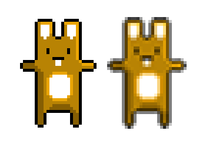

Making it go really fast.
I co-created LiterallyCanvas.
Program ⇒ Video Buffer ⇒ Screen
Program ⇒ Library ⇒ Kernel ⇒ Graphics Card ⇒ Screen
You have <17ms to render a frame. It pays to know what you're asking the computer to do.
<canvas width="250" height="250" style="width: 500px; height: 500px">
You see this text if your browser dosent support canvas.
</canvas>
var canvas = document.getElementById('the-basics');
var context = canvas.getContext('2d');
// Clear the canvas
context.clearRect(0, 0, canvas.width, canvas.height);
// fillStyle and strokeStyle are CSS
context.fillStyle = 'rgba(255, 0, 0, 0.5)';
context.strokeStyle = 'rgba(0, 255, 255, 1)';
// Draw a stroked rectangle
context.strokeRect(x, y, width, height);
// Draw a filled triangle
context.beginPath();
context.moveTo(x, y);
context.lineTo(x + width, y);
context.lineTo(x + width, y + height);
context.fill();
var data = context.createImageData(canvas.width, canvas.height);
for (var x = 0; x < data.width; x++) {
for (var y = 0; y < data.height; y++) {
var index = (y * data.width + x) * 4;
data.data[index + 0] = r;
data.data[index + 1] = g;
data.data[index + 2] = b;
data.data[index + 3] = 255;
}
}
context.putImageData(data, 0, 0);
context.fillSyle = 'rgba(' + r + ',' + g + ',' + b + ', 1)';
context.fillRect(0, 0, canvas.width, canvas.height);
for (var x = 0; x < canvas.width; x=x+10) {
for (var y = 0; y < canvas.height; y=y+10) {
if ((x / 10 + (y / 10 % 2 ? 1 : 0)) % 2) {
context.fillStyle = "#222";
} else {
context.fillStyle = "#666";
}
context.fillRect(x, y, 10, 10);
}
}
context.fillStyle = "#222";
for (var x = 0; x < canvas.width; x=x+10) {
for (var y = 0; y < canvas.height; y=y+10) {
if ((x / 10 + (y / 10 % 2 ? 1 : 0)) % 2) {
context.fillRect(x, y, 10, 10);
}
}
}
context.fillStyle = "#666";
for (var x = 0; x < canvas.width; x=x+10) {
for (var y = 0; y < canvas.height; y=y+10) {
if (!((x / 10 + (y / 10 % 2 ? 1 : 0)) % 2)) {
context.fillRect(x, y, 10, 10);
}
}
}
context.fillStyle = "#222";
context.beginPath();
for (var x = 0; x < canvas.width; x=x+10) {
for (var y = 0; y < canvas.height; y=y+10) {
if ((x / 10 + (y / 10 % 2 ? 1 : 0)) % 2) {
context.moveTo(x, y);
context.lineTo(x + 10, y);
context.lineTo(x + 10, y + 10);
context.lineTo(x, y + 10);
}
}
}
context.fill();
context.fillStyle = "#666";
context.beginPath();
for (var x = 0; x < canvas.width; x=x+10) {
for (var y = 0; y < canvas.height; y=y+10) {
if (!((x / 10 + (y / 10 % 2 ? 1 : 0)) % 2)) {
context.moveTo(x, y);
context.lineTo(x + 10, y);
context.lineTo(x + 10, y + 10);
context.lineTo(x, y + 10);
}
}
}
context.fill();
var offscreenBuffer = document.createElement('canvas');
offscreenBuffer.width = 640;
offscreenBuffer.height = 480;
context.drawImage(offscreenBuffer, 0, 0);
640 x 480 x 4 = ~1.17MB
1920 x 1080 x 4 = ~7.91MB
Canvas is a DOM element after all
Yes, this is crazy
Don't use it
canvas.width = canvas.width
Unless you want fuzzy images...
 http://seb.ly/2011/02/html5-canvas-sprite-optimisation/
// With a bitwise or.
rounded = (0.5 + somenum) | 0;
// A double bitwise not.
rounded = ~~ (0.5 + somenum);
// Finally, a left bitwise shift.
rounded = (0.5 + somenum) << 0;
function myAnimation() {
var time = Date.now();
// Do stuff
setTimeout(myAnimation, 1000/60);
}
myAnimation();
var frameTime = 1000/60;
function myAnimation() {
var time = Date.now();
// Do stuff
var nextFrame = (time % frameTime + 1) * frameTime;
setTimeout(myAnimation, nextFrame - time);
}
myAnimation();
function myAnimation(time) {
// Do stuff
requestAnimationFrame(myAnimation);
}
requestAnimationFrame(myAnimation);
function animate(fn) {
var lastFrame;
var wrapped = function(time) {
lastFrame = lastFrame || time;
var delta = time - lastFrame();
lastFrame = time;
fn(delta, time);
requestAnimationFrame(wrapped);
};
requestAnimationFrame(wrapped);
}
animate(function(delta, time) {
// Do stuff
});
var myWorker = new Worker("my_task.js");
myWorker.addEventListener("message", function (oEvent) {
console.log("Called back by the worker!\n");
}, false);
myWorker.postMessage(""); // start the worker.
Thanks to Jarek Rossignac
Improving HTML5 Canvas Performance
Ask questions in #canvas